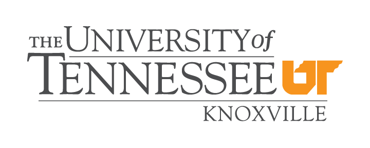

CnC 2020: The Twelfth Annual Concurrent Collections Workshop
December 7–8, 2020
Due to the coronavirus pandemic, the workshop will be online only.
Important Dates
- Workshop
- December 7–8, 2020
Chairs
- George Bosilca
- University of Tennessee, Knoxville
- Mohammad Mahdi Javanmard
Steering committee
- Zoran Budimlić
- Rice University
- P. Sadayappan
- University of Utah
- Kath Knobe
- Rice University
- Louis-Noel Pouchet
- Colorado State University
- Frank Schlimbach
- Intel Corp.
Past Workshops
The annual Concurrent Collections (CnC) workshop is as a forum
for researchers and developers of parallel programs to
interact on a variety of issues related to next-generation
parallel programming models. The focus is on fostering a
community around
the CnC
programming model; however, we also strongly encourage
participation by anyone with an interest programming models
inspired by dataflow and/or tuple space ideas as well as
current or emerging applications of such models.
Workshop Operation Notice
Due to the coronavirus pandemic, the workshop is operated in fully VIRTUAL style. You can access to the workshop materials and presentations by on-line tools of YouTube, Zoom, and Slack. Further detail will be provided later.
Registration
There is no registration fee for workshop attendance this year.
Important Dates
- Abstract Submission deadline: November 13, 2020
- Acceptance Notification: November 27, 2020
- Workshop: December 7-8, 2020
Background on CnC
CnC is a parallel programming model for mainstream programmers that philosophically differs from other approaches. CnC programmers do not specify parallel operations. Instead, they only specify semantic ordering constraints. This provides a separation of concerns between the domain expert and tuning expert, simplifying the domain expert’s job while providing more flexibility to the tuning expert. Details on CnC and related research can be found at:https://icnc.github.ioPrior workshops have served as a forum for users and potential users of Concurrent Collections (CnC), to discuss experiences with CnC and a range of topics, including developments for the language, applications, usability, performance, semantics, and teaching of CnC.
and
https://habanero.rice.edu/cnc
Need more information?
If you have any questions about logistics or participation, please contact the workshop chairs at bosilca@icl.utk.edu and mjavanmard@cs.stonybrook.edu.CnC Workshop Sponsors


Last updated: September 5, 2020